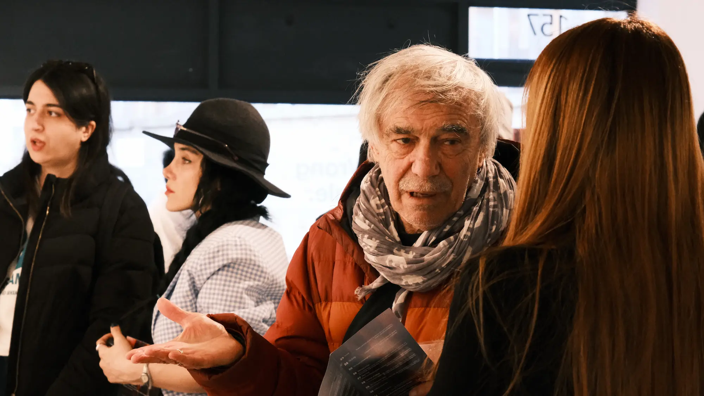
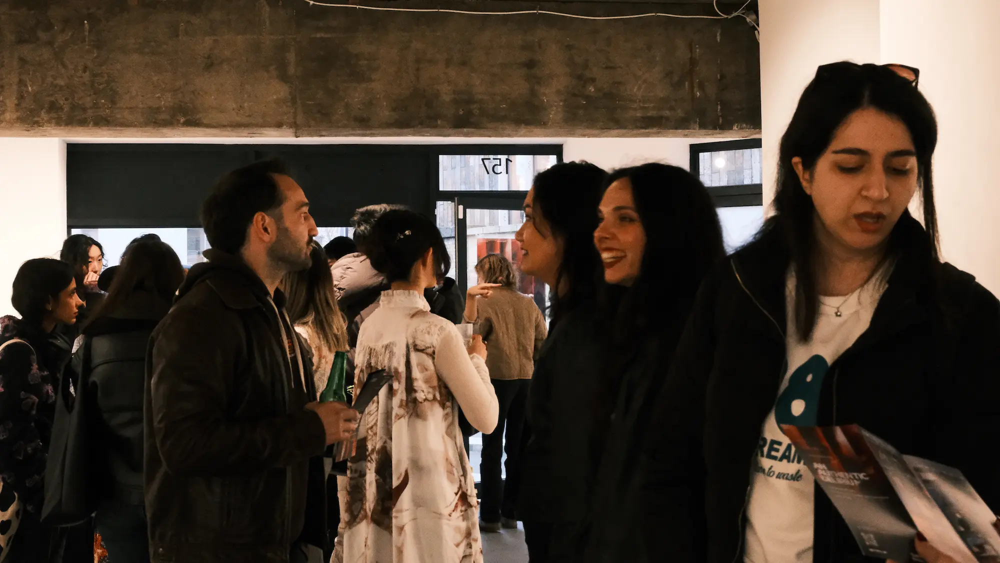
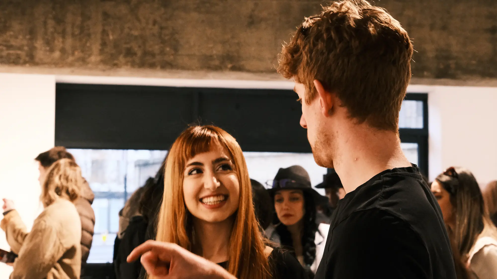
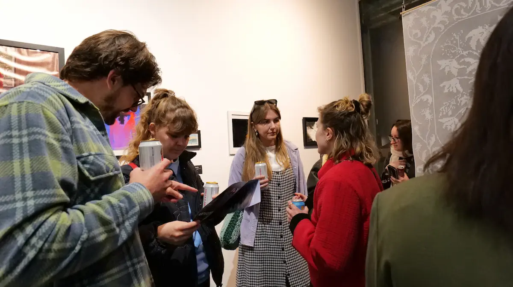
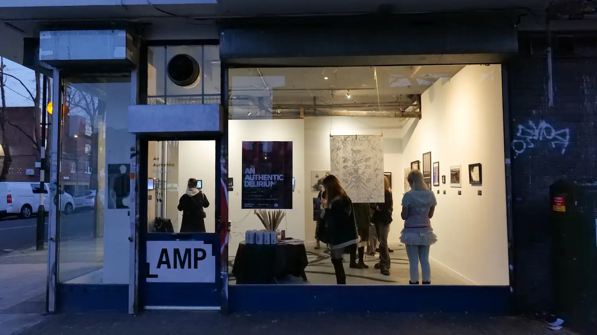
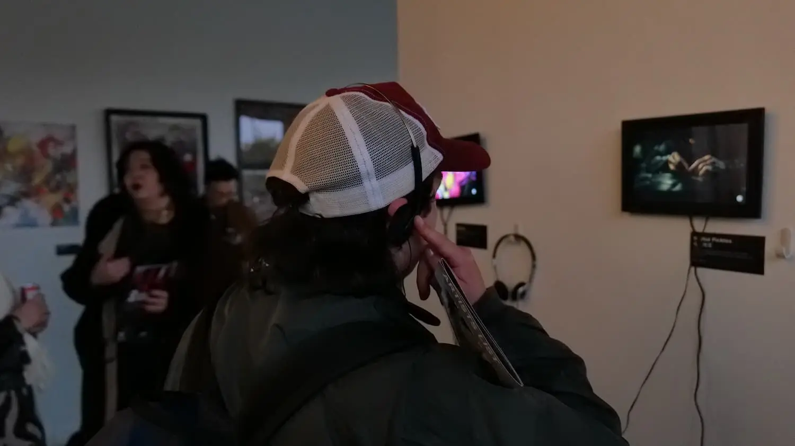
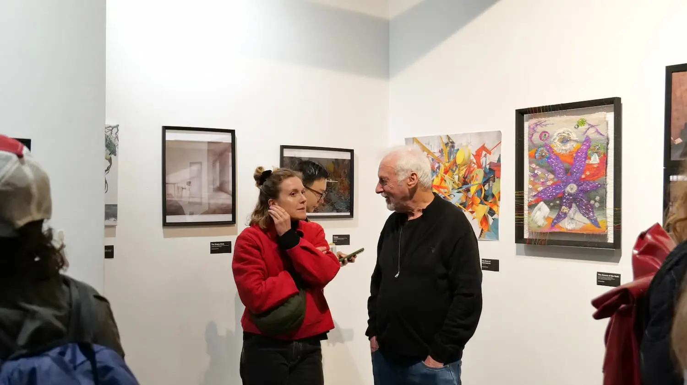

An Authentic Delirium is a pavilion within The Wrong Biennale 2025–2026, presenting work by forty-three artists across installation, moving image, and digital media. The exhibition examines how contemporary systems construct emotional experience, and how authenticity operates within environments designed to simulate feeling. When an algorithm produces a convincing emotion, the question is no longer whether the feeling is real, but how vulnerability, belief, and participation form inside coded conditions.
The pavilion unfolds across three sites. At AMP Gallery in London (21–23 March 2026), the exhibition is presented as Embassy at AMP Gallery, alongside a parallel presentation at Koppel Collective (30–31 March 2026). The online pavilion runs on thewrong.org from November 2025 through March 2026, extending the exhibition into the distributed, non-physical space the biennale takes as its native condition.
Curated by Jes Chen on behalf of OMMFA and produced in collaboration with Spira 9, An Authentic Delirium continues an ongoing curatorial enquiry into the conditions under which feeling is produced, recognised, and exchanged.








